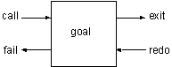

1. 简单查询
现在我们的游戏中已经有了一些事实，使用Prolog的解释器调入此程序后，我们就可以对这些事实进行查询了。本章和下一章中的Prolog程序只包括事实，我们要学会如何对这些事实进行查询。
Prolog的查询工作是靠模式匹配完成的。查询的模板叫做目标(goal)。如果有某个事实与目标匹配，那么查询就成功了，Prolog的解释器会回显'yes.'。如果没有匹配的事实，查询就失败了，解释器回显'no.'。
我们把Prolog的模式匹配工作叫做联合(unification)。当数据库中只包括事实时，以下三个条件是使联合成功的必要条件。
- 目标谓词名与数据库中的某个谓词名相同。
- 这两个谓词的参数数目相同。
- 所有的参数也相同。
在介绍查询之前，让我们回顾一下上一章所编写的Prolog程序。
room(kitchen).
room(office).
room(hall).
room('dining room').
room(cellar).
door(office,hall).
door(kitchen,office).
door(hall,'dining room').
door(kitchen,cellar).
door('dining room',kitchen).
location(desk,office).
location(apple,kitchen).
location(flashlight,desk).
location('washing machine',cellar).
location(nani,'washing machine').
location(broccoli,kitchen).
location(crackers,kitchen).
location(computer,office).
edible(apple).
edible(crackers).
tastes_yucky(broccoli).
here(kitchen).
以上是我们的“寻找Nani”中的所有事实。把这段程序调入Prolog解释器中后就可以开始进行查询了。
我们的第一个问题是：office在本游戏中是不是一个房间。
?-room(office).
yes.
Prolog回答yes，因为它在数据库中找到了room(office).这个事实。我们继续问：有没有attic这个房间。
?-room(attic).
no.
Prolog回答no，因为它在数据库中找不到room(attic).这个事实。同样我们还可以进行如下的询问。
?- location(apple, kitchen).
yes
?- location(kitchen, apple).
no
你看Prolog懂我们的意思呢，它知道苹果在厨房里，并且知道厨房不在苹果里。但是下面的询问就出问题了。
?- door(office, hall).
yes
?- door(hall, office).
no
由于我们定义的门是单方向的，结果遇到了麻烦。
在查询目标中我们还可以使用Prolog的变量。这种变量和其他语言中的不同。叫它逻辑变量更合适一点。变量可以代替目标中的一些参数。
变量给联合操作带来了新的意义。以前联合操作只有在谓词名和参数都相同时才能成功。但是引入了变量之后，变量可以和任何的条目匹配。
当联合成功之后，变量的值将和它所匹配的条目的值相同。这叫做变量的绑定(binding)。当带变量的目标成功的和数据库中的事实匹配之后，Prolog将返回变量绑定的值。
由于变量可能和多个条目匹配，Prolog允许你察看其他的绑定值。在每次Prolog的回答后输入“；”，可以让Prolog继续查询。下面的例子可以找到所有的房间。“；”是用户输入的。
?- room(X).
X = kitchen ;
X = office ;
X = hall ;
X = 'dining room' ;
X = cellar ;
no
最后的no表示找不到更多的答案了。
下面我们想看看kitchen中都有些什么。（变量以大写字母开始）
?- location(Thing, kitchen).
Thing = apple ;
Thing = broccoli ;
Thing = crackers ;
no
我们还可以使用两个变量来查询所有的物体及其位置。
?- location(Thing, Place).
Thing = desk
Place = office ;
Thing = apple
Place = kitchen ;
Thing = flashlight
Place = desk ;
//...
no
1.1. 查询的工作原理
当Prolog试图与某一个目标匹配时，例如：location/2，它就在数据库中搜寻所有用location/2定义的子句，当找到一条与目标匹配时，它就为这条子句作上记号。当用户需要更多的答案时，它就从那条作了记号的子句开始向下查询。
我们来看一个例子，用户询问：location（X，kitchen）.。Prolog找到数据库中的第一条location/2子句，并与目标比较。
目标location(X, kitchen)
子句#1 location(desk, office)
匹配失败，因为第二个参数不同，一个是kitchen，一个是office。于是Prolog继续比较第二个子句。
目标location(X, kitchen)
子句#2 location(apple, kitchen)
这回匹配成功，而变量X的值就被绑定成了apple。
?- location(X, kitchen).
X = apple
如果用户输入分号(;)，Prolog就开始寻找其他的答案。首先它必须释放（unbinds）变量X。然后从上一次成功的位置的下一条子句开始继续搜索。这个过程叫做回溯（backtracking）。在本例中就是第三条子句。
目标location(X, kitchen)
子句#3 location(flashlight, desk)
匹配失败，直到第六条子句时匹配又成功了。
目标location(X, kitchen)
子句#6 location(broccoli, kitchen)
结果变量X又被绑定为broccoli，解释器显示：
X = broccoli ;
再度输入分号，X又被解放，开始新的搜索。又找到了：
X = crackers ;
这回再没有新的子句能够匹配了，于是Prolog回答no，表示最后一次搜索失败了。
no
要想了解Prolog的运行顺序，最好的方法就是单步调试程序，不过在此之前，还是让我们加深一下对目标的认识吧。
Prolog的目标有四个端口用来控制运行的流程：调用（call）、退出（exit）、重试（redo）以及失败（fail）。一开始使用Call端口进入目标，如果匹配成功就到了exit端口，如果失败就到了fail端口，如果用户输入分号，则又从redo端口进入目标。下图表示了目标和它的四个端口。

每个端口的功能如下：
call开始使用目标搜寻子句。exit目标匹配成功，在成功的子句上作记号，并绑定变量。redo试图重新满足目标，首先释放变量，并从上次的记号开始搜索。fail表示再找不到更多的满足目标的子句了。
下面列出了调试location(X,kitchen).时的情况。括号中的数字表示当前正在考虑的子句。
?- location(X, kitchen).
CALL: - location(X, kitchen)
EXIT:(2) location(apple, kitchen)
X = apple;
REDO: location(X, kitchen)
EXIT:(6) location(broccoli, kitchen)
X = broccoli ;
REDO: location(X, kitchen)
EXIT:(7) location(crackers, kitchen)
X = crackers ;
FAIL - location(X, kitchen)
no
1.2. Debug
在Prolog的解释器中输入，
?- debug.
就可以开始调试你的程序了。
1.2.1. swipl debug
上面所述的是vspl的用法，swipl略有不同
在swipl中，有更加强大的guidebug工具，非常好用。除了跟踪脚本运行还能监控stack（并且这个gui工具也是基于pl编写的！）
关于gui的就不谈了，官方文档更清晰，并且也不用太多说明
如果不想要GUI的跟踪输出，在swipl中需要这么用
?- visible(+all), leash(-exit).
true.
?- trace.
true.
[trace] ?-
在跟踪时按
h显示帮助，不过一般的情况全程按c(小写)就够用了，毕竟还不是特别复杂的程序
退出trace模式
[trace] ?- nodebug.
true.
?-